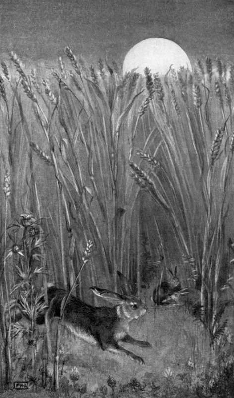

The Chase. Continued
Description
This section is from the book "Creatures Of The Night: A Book Of Wild Life In Western Britain", by Alfred W. Rees. Also available from Amazon: Creatures Of The Night: A Book Of Wild Life In Western Britain.
The Chase. Continued
Luckily for Puss, the harriers never visited her neighbourhood, and only on special occasions was coursing permitted on the estate. If at night a lurcher entered the field in which she grazed amid the clover, her knowledge of the poacher's artifices immediately prompted her to slip over the hedge and past the treacherous nets. Her life, beset with hidden dangers, was preserved by a chain of wonderfully favourable circumstances, that befriended her even when the utmost caution and vigilance had been unavailing.
Once, so mild was the winter that the hare's first family for the year came into the world in January. A few weeks afterwards, when she was about to separate from her leverets, an incident occurred that might have been attended with fatal results. A poacher, prowling along the far side of the hedgerow, and occasionally stopping to peep through the bushes for partridges "jugging" in the grass-field, caught sight of the leverets nibbling the clover near a small blackthorn. In the feeble afterglow, he was uncertain that the objects before him were worth the risk of a shot, so he crawled towards a gap to obtain a nearer view. To his astonishment, when he reached the gap nothing was visible by the thorn-bush; the leverets had vanished in the ferns. But the poacher was artful and experienced. He hid in the undergrowth of the ditch, where, after waiting awhile, and seeing no sign of movement in the grass, he gave utterance to a shrill cry like that of a young hare in distress. Five minutes passed, and the cry was repeated — tremulous, prolonged, eloquent of helpless suffering. At intervals, the same artifice was employed, but apparently without success.
The poacher was about to crawl from his hiding place, when suddenly, close beside the hedgerow, the head of the doe hare came into sight. Startled, in spite of expectation, by her sudden appearance, and excited as he recognised the "slit-eared hare," the poacher involuntarily moved to grasp his gun. He looked down for an instant to make sure that his gun was in readiness, but when he lifted his eyes again the hare was gone. Do what he might, not another glimpse of his quarry was to be obtained, and so, half believing that he had seen a witch or that he had dreamed, he stole away into the darkening night.
Deceived by the poacher's cries, the doe-hare had hurried home, but had found her young alive and well. Then, scenting danger, she had vanished with her offspring into the nearest bramble-clump, and in the deep shadow of the hedgerow had led them safely away.
During the last year of her life, she frequented the hawthorn hedges and the furze brakes of an estate diligently "preserved" by a lover of Nature as a sanctuary whither the furred and feathered denizens of the countryside might resort without fear of hounds or poachers, and where a gun was never fired except at vermin. The winter was severe; on two occasions snow lay thick on the ground for more than a week. But Puss was fairly comfortable; she had her "form" on a dry, rough heap of stones, gathered from the fields and thrown into a disused quarry near the woods; and for four or five nights she remained at home, the snow covering her completely but for a breathing hole in the white walls of her tiny hut. At last, impatient of confinement, and desperately hungry, she broke through the snow-drift, and sought the nearest root-crop field, where, after scratching the snow from a turnip, she was able to make a hearty meal. While returning slowly towards the wood through the soft, yielding snow that rendered her journey difficult and tiresome, she unexpectedly discovered, near the hedge beyond the furrows, a tasty leaf or two of the rest-harrow, together with a few yellow sprouts of young grass where a stone had been kicked aside by a passing sheep— these were the tit-bits of her provender.
In the early morning, the hare, too cautious to re-enter the " form," which, now that its surroundings were torn asunder, had become a conspicuous rent in the white mantle of the old quarry, crept over the hedge into the woods, and, moving leisurely beneath the snow-laden undergrowth, where her deep footprints could not easily be tracked, selected a suitable spot for a new " form" in the friendly shelter of a fallen pine.
But even in this woodland sanctuary she encountered an enemy. A cat from the farm on the hill, having acquired poaching habits, had strayed, and taken up her abode among the boulders at the foot of a wooded precipice adjoining the lower pastures of the estate. In a gallery between these boulders, she had made her nest of withered grass and oak-leaves, where, at the time of which I write, she was occupied with a family of kittens. The wants of the kittens taxed the mother's utmost powers; she prowled far and wide in search of food, and was as much a creature of the night as were the fox and the polecat that also lived among the rocks.
There is no greater enemy of game than the renegade cat. She is far more destructive than a fox. Many animals that can evade Reynard are helpless in the grip of a foe armed so completely as to seem all fangs and talons. The special method of slaughter adopted by the cat towards a victim of her own size is cruel and repulsive in the extreme. Grasping it with her fore-claws and holding it with her teeth, she lies on her back and uses her hind-claws with such effect that often her prey is lacerated to death.
Roaming at night in the shadow, the cat came unexpectedly on the scent of the hare and traced it to the "form," but the desired victim was not at home. The cat returned to the spot before dawn, and lurked in hiding beneath the hawthorns. The hare, however, was not to be easily trapped. Coming into the wood against the wind, she fortunately detected the enemy's presence quite as readily as the cat had discovered her "form" amid the grass-bents. With ears set close, and limbs and tail twitching with excitement, the cat crouched ready for the deadly leap. But the hare suddenly sprang aside from her path, climbed the hedgerow, and disappeared, outpacing with ease the cat's half-hearted attempt at pursuit.
At length the "slit-eared hare" met her death, in a manner befitting the wild, free existence she had led among the hills and t the valleys. Her dead body was brought me by the head keeper of the woodland estate, and, as it rested on my study table, I gazed at it almost in wonder. The russet coat, turning grey with age, was eloquent of the brown earth, the sere leaf, and the colourless calm of twilight, and told me of the creature's times and seasons. The big, dark eyes, their marvellous beauty and expressiveness dimmed by death, and the long, sensitive ears, one ripped by the falcon's talon and both slightly bent at the tip with age, were suggestive of persecution, and of a haunting fear banished only with the coming of night, when, perchance, the early autumn moon rose over the corn, and the hare played with her leverets among the shadowy " creeps." My hands rested on the fine, white down that took the place of the russet coat where Nature's mimicry was needed not; it was pure and stainless, like the lonely wildling's inoffensive life.
A terrible thunderstorm had raged over the countryside all the evening and throughout the night. Ben, the carter, coming home to the farm with his team, had dropped at the very threshold of the stable, blasted in a lurid furnace of sudden fire. A labourer's cottage had been wrecked; many a stately forest tree had been rent or blighted; the withering havoc had spread far and wide over the hills. On the following morning, the keeper, going his rounds, had found the dead hare beside a riven oak.
"WHEN THE EARLY AUTUMN MOON ROSE OVER THE CORN".
[To face 290].
Continue to: